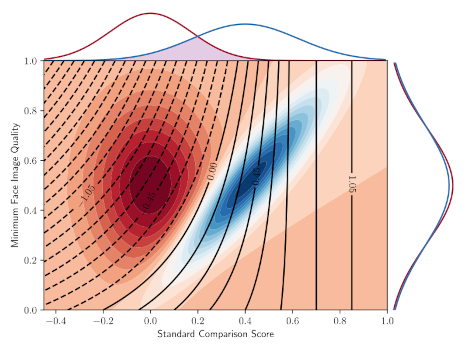
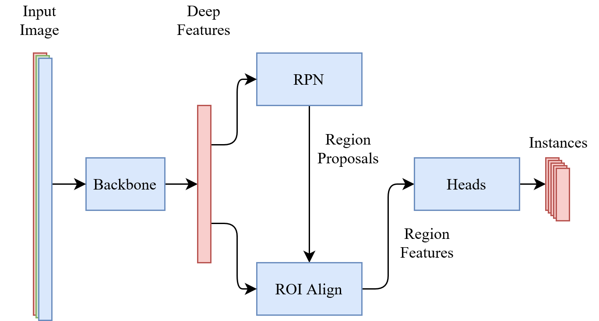
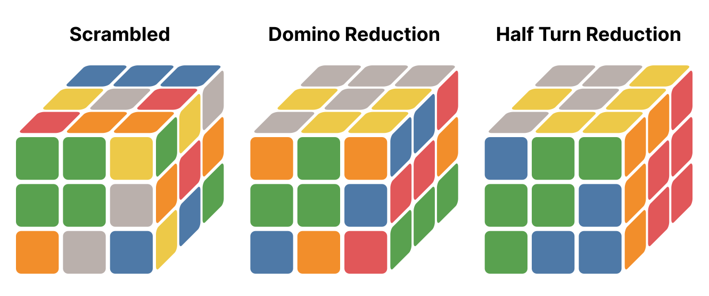
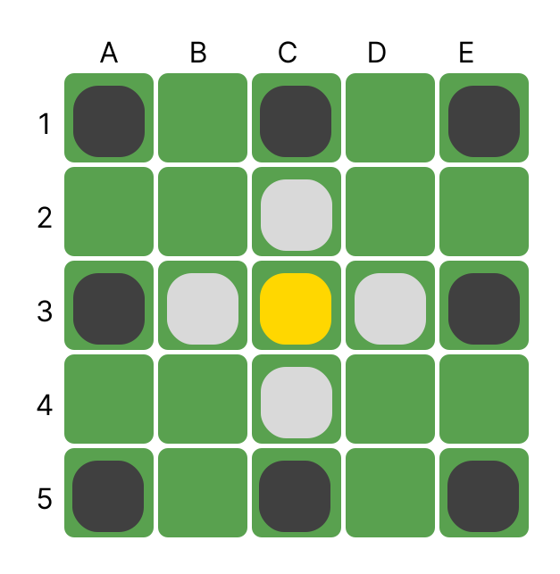

Malte's Project Showcase
Technologies: Python, Numpy, MatplotLib, LaTeX, PyTorch, Conda
Description: Bachelor thesis. Using quality values from MagFace in the Comparison function to improve recognition performance. In the graphic below we can see a modelled face recognition scenario. We consider pairs of face images that either belong to the same person (genuine pairs) or to different persons (imposter pairs). For each pair we compute the standard comparison score (Cosine Similarity) and take the minimum of the two quality values. When plotting the genuine and imposter distribution we can see that the ideal decision boundary follows a curve because low-quality image pairs with a slightly below average comparison score are likely genuine pairs. However, when thresholding on the standard comparison score, we can not make use of this observation, for this reason we proposed the QMagFace comparison score.
Technologies: Python, PyTorch, Detectron2, LaTeX
Description: Havasi et al propose a new technique to train Deep Ensembles using just a single network. We followed the approach of Cygert et al 2021 who applied MIMO ensembling to Faster R-CNN and applied this ensembling technique to Mask R-CNN. Unfortunately the results left a bit to be desired. The proposed network architecture can be seen here:
Technologies: C++, CMake, OpenMP, Julia
Description: Side project. For the speedcubing discipline "Fewest Moves Challenge" there is a solving technique called Domino Reduction explained in much detail by Herbert Kociemba, it is the first step of the two-phase algorithm for solving a 3x3 Rubik's Cube. Because humans usually can't easily find a direct solution after Domino Reduction (DR), people started further reducing the subset to just 180° turns [U2, D2, R2, L2, F2, B2]. This is called Half Turn Reduction (HTR), together with another friend we wanted to figure out "What is the distrubtion of optimal moves to achieve HTR when considering all possible starting DRs". To answer this question we wrote a solver in Julia, and then ported it to C++, adding multi-threading to speed up the processing.
Technologies: C++, Python, Numpy, PyTorch, LibTorch, OpenMP, OpenCV
Description: University Project. GIF is a common file format to come across, especially on the web. However, to save an image as a GIF, one has to define a palette with a maximum number of 256 colors, no other colors can be used in the image. Because of this, there is usually a significant loss in quality when converting to GIF. To mitigate this, we can use color dithering. The most common technique for color dithering is the Floyd-Steinberg Dithering algorithm. In this University project I implemented and extended a modern version of the "Dithered Color Quantization" paper by Buhmann et al.
8 Color Quantization
Original Image
Technologies: Rust
Description: Side Project. A friend asked me a question about calculating a combinatorial value. After solving the problem I joined in on his project by implementing a competing Simple Tafl solver. Simple Tafl is a version of the board game Hnefatafl with a simplified ruleset. By additionally decreasing the board size, we hoped to decrease the complexity enough to make it fully solvable.
